Перед вами классическая советская логическая игра для одного игрока (солитёр), выпущенная Ленинградским производственным объединением в 1988 году. Это не просто развлечение, а настоящий тренажер для мозга, развивающий тактическое мышление и сообразительность.
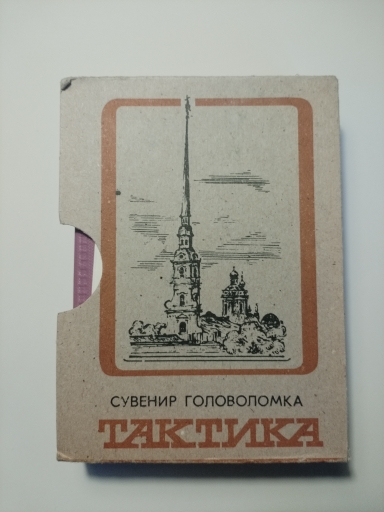
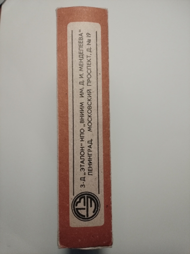
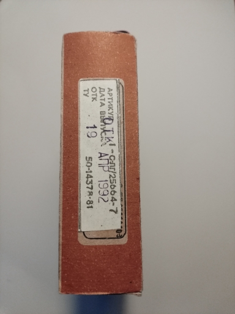
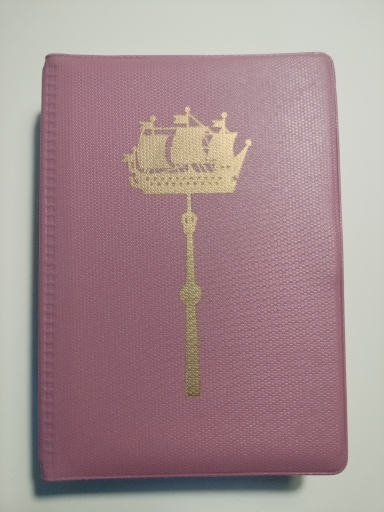
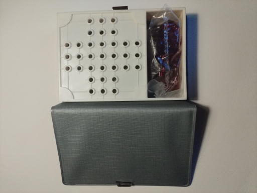
В комплект входят пластиковое поле с 33 лунками и 32 фишки. Одна лунка (центральная) всегда остается пустой.
В оригинальной инструкции не указан запрет на повороты во время серии прыжков. Это означает, что при желании вы можете выполнять каскадные ходы, поворачивая на 90 градусов и снимая множество фишек за один ход.
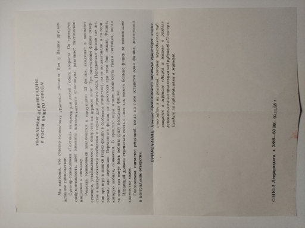
Классическая расстановка для этой головоломки — «крест» с пустой центральной лункой.
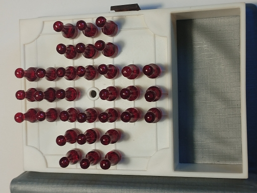
Благодаря тому, что правила не запрещают менять направление во время прыжков, можно создавать невероятные каскадные комбинации. В этом эксперименте одна фишка (помечена белым квадратом) сняла 16 фишек за один непрерывный ход, двигаясь по периметру и заходя в центр.
Для запуска эксперимента угловые фишки были убраны, чтобы освободить путь для разворота (см. первый кадр галереи).
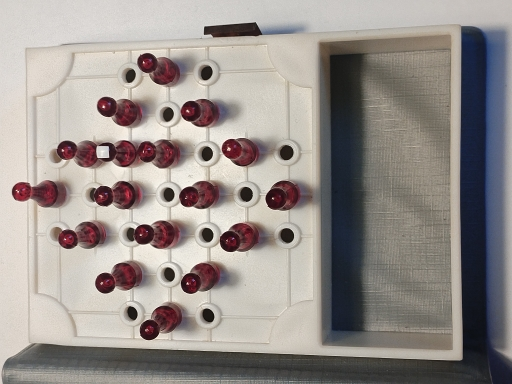
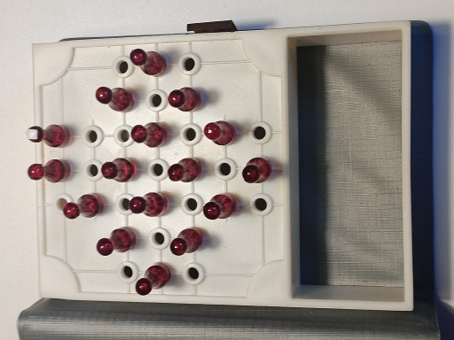
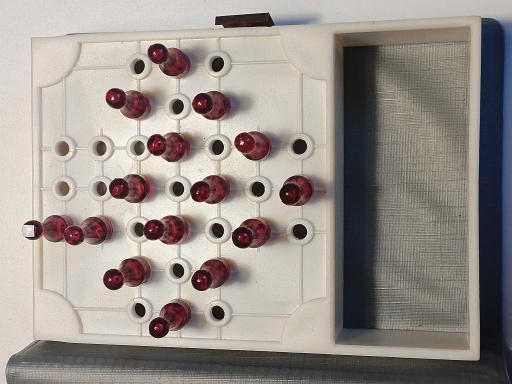
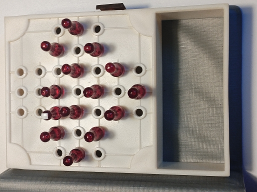
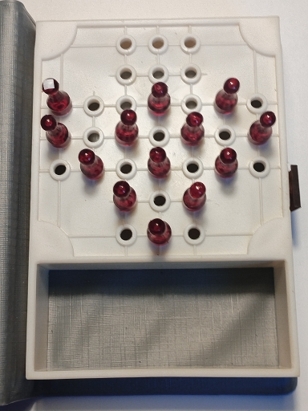
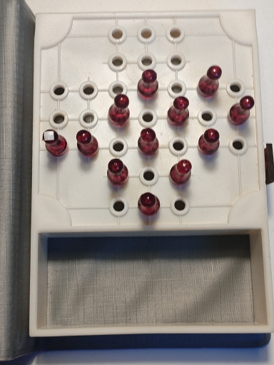
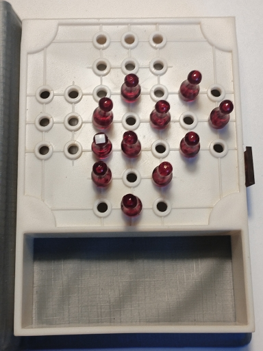
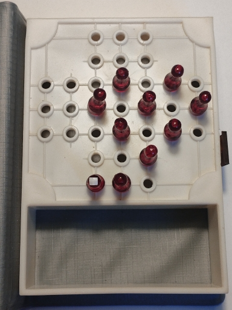
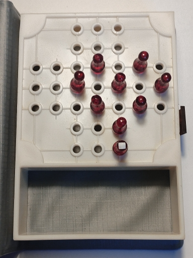
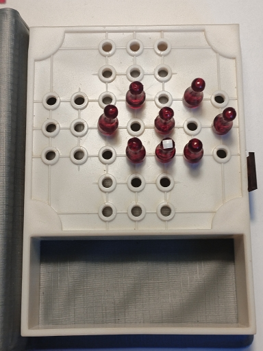
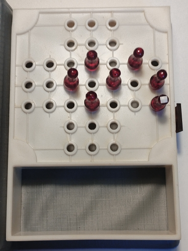
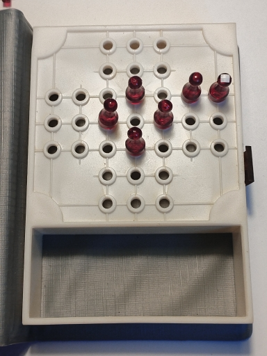
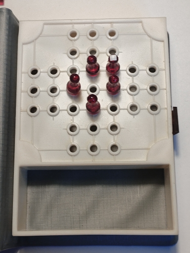
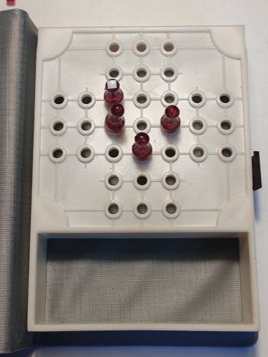
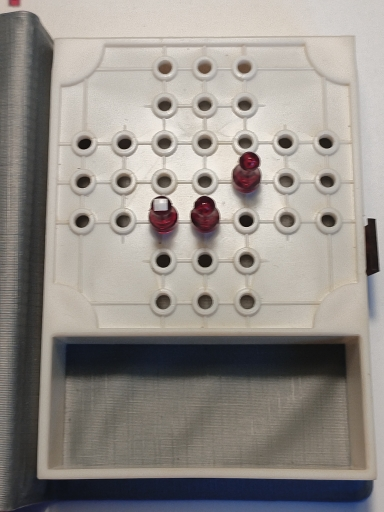
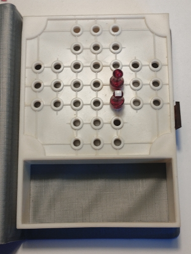
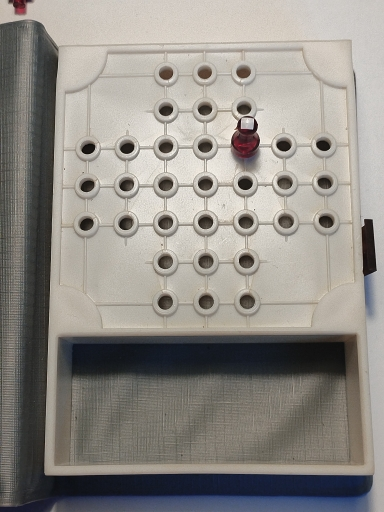
Этот сайт создан для сохранения истории советских настольных игр. Игра «Тактика» — яркий пример того, как простая механика с колышками превращается в сложнейшую логическую задачу, опередившую свое время.